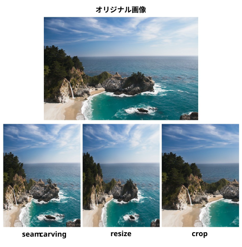

● 『Seam Carving for Content-Aware Image Resizing』 (SIGGRAP2007)

Seam Carving（シームカービング）とは、画像の重要な被写体を歪めることなく、不要な背景部分などを自動的に識別して縮小・拡大（リサイズ）できるコンテンツを意識した画像リサイズ（Content-Aware Image Resizing）アルゴリズムです。2007年にShai Avidan氏とAriel Shamir氏によって発表されました。
通常の画像リサイズは全体を一様に引き伸ばしたり縮めたりするため、被写体が横太りしたり潰れたりしてしまいます。しかしシームカービングでは、画像内の「情報量が少なく、消しても目立たない部分」を自動で見つけて処理するため、メインの被写体を保ったまま縦横比を変更できます
画像を単に幾何学的に縮小・拡大するのではなく、画像内の「コンテンツ（意味や重要度）」を考慮してリサイズするという新しいパラダイムを確立し、当時の画像処理分野に非常に大きな衝撃を与えました。
(蛇足)
直訳すると「縫い目を削り取る」
● data/seam_carving/src/seam_carving_using_library.py
(環境構築)
pip install seam-carving opencv-python
(使い方)
python seam_carving_using_library.py (画像ファイル) [(幅のスケール) (高さのスケール)]
・ スケール≦1 (縮小のみ)
・ sキー 保存～終了
・ その他キー 保存せずに終了
● data/seam_carving/src/seam_carving_from_scratch.py
(環境構築)
pip install opencv-python
(使い方)
python seam_carving_from_scratch.py (画像ファイル) [(幅のスケール) (高さのスケール)]
・ すごく遅い
・ スケール≦1 (縮小のみ)
・ sキー 保存～終了
・ その他キー 保存せずに終了